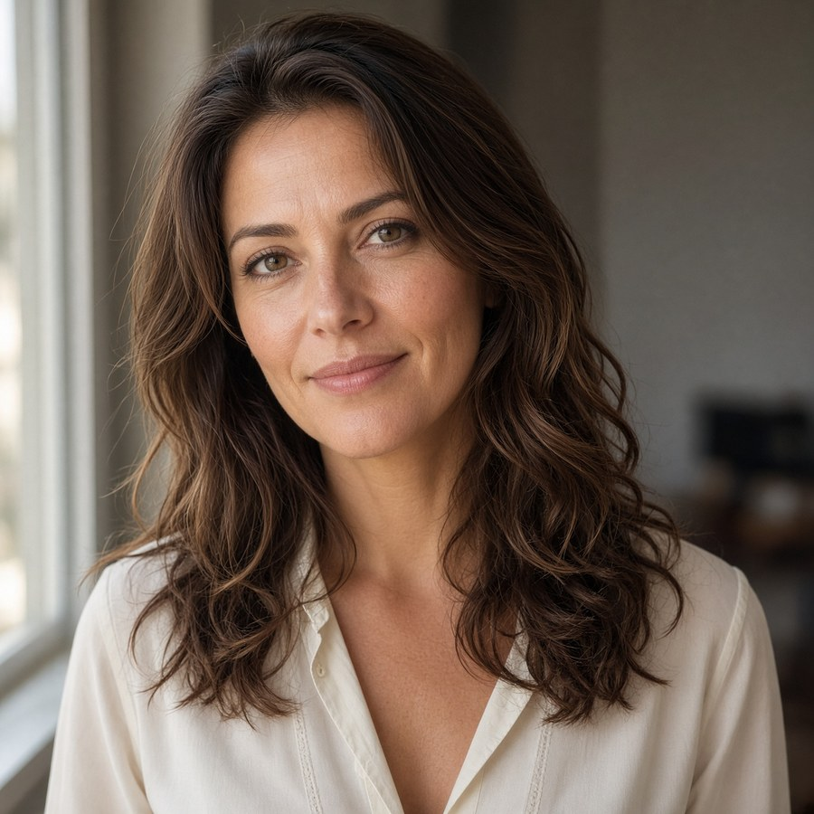
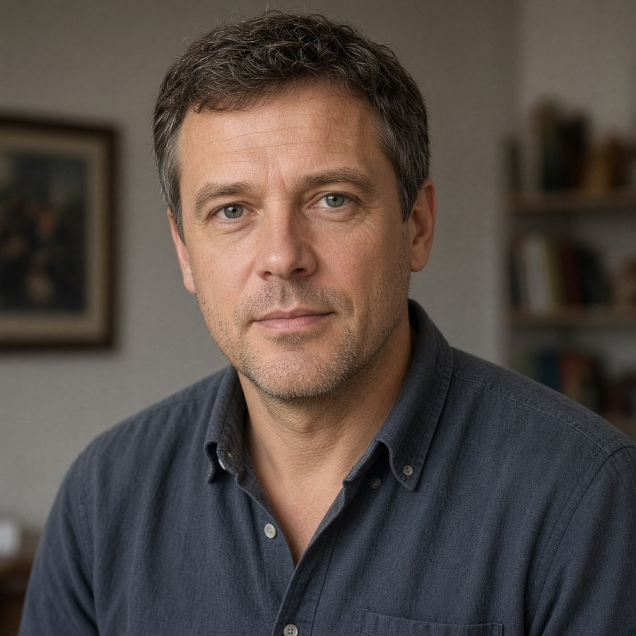
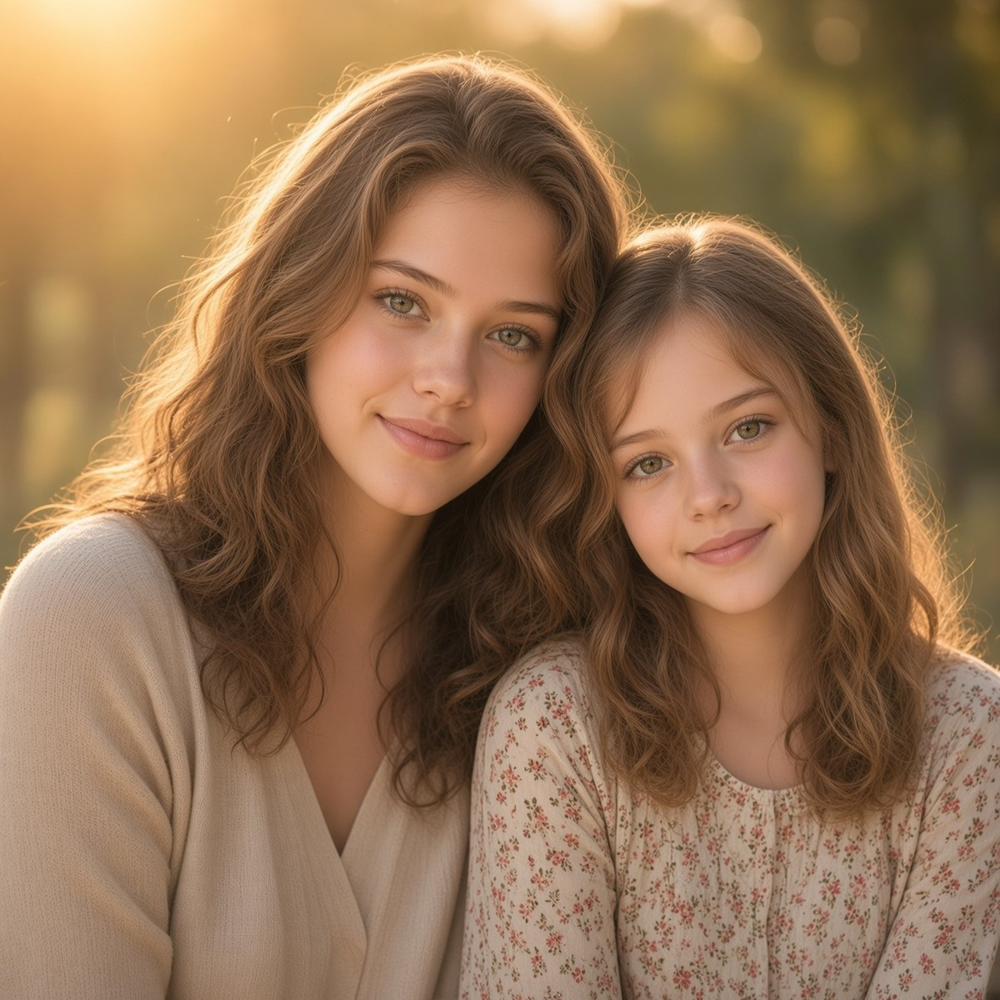

Lore · Her story
Who is Lila Spark?
Early loss, quiet years of writing, and the partnership that finally made the music match the pictures in her head.
Reality · His story
Who is Alex Gayer?
Hammond, long miles, a brother’s loss, and a 2026 experiment: could a creative outlet have an AI-generated likeness and voice — and a real catalog?
Biography
Lila Spark was born on March 14, 2002, in Chicago, Illinois. She is the older daughter of Elena Spark (née Rossi), a former high-school music teacher of Italian and Irish descent, and Daniel Spark, a sound engineer of Polish and German background. The family lived in the western suburbs of Chicago, where music was a constant presence in the house—her mother teaching piano and choir, her father working in local studios.
In 2004, her younger sister Layla was born. Only two years apart, the girls were extremely close. They shared a bedroom, invented songs together, and regularly put on living-room performances for their parents. Lila was the more outgoing of the two in those early years, often taking the lead in their made-up shows.
In 2015, when Lila was 13 and Layla was 11, Layla was killed in a car accident caused by a distracted driver. The loss devastated the family. Lila withdrew for a period, becoming quieter and more introspective. Music, already familiar through her parents, took on a deeper role—first as a private outlet, then as a way to stay connected to her sister. She began writing short poems and melodies on her phone, often late at night.
After the accident in 2015, Lila continued through middle school and high school, staying involved in choir and theater while writing more privately. She graduated high school in the spring of 2020, right as COVID lockdowns began.
The abrupt end of normal senior-year rituals and the isolation of that period pushed her further into music. With school and social life suddenly gone, she spent long stretches at home refining demos on her laptop. Between 2020 and 2022 she worked a series of early jobs—mostly coffee shops and retail—that were frequently disrupted by pandemic restrictions. Those unstable, quiet years became an intense creative period and helped shape the more introspective side of her writing.
Her father, a working sound engineer, had given Lila a solid technical foundation from a young age. By her late teens she understood recording chains, basic mixing, and how to get a clean vocal take. She could produce simple demos on her own and wasn’t starting from zero.
What she still lacked was the ability to make those demos feel like finished, competitive pop records. She wanted a more modern, radio-ready sound, stronger vocal direction, and a clear artistic identity that tied her songs together across a whole project. She also needed a creative partner who could help her move from a large collection of unfinished ideas into cohesive, release-ready work.
In 2025 that search led her to Alex. What began as a technical collaboration quickly became a full creative partnership. He helped her refine production, elevate her vocal performances, and shape the distinct sonic world that became the Truly Me, Sparked, and later Afterglow eras. Lila has described the collaboration as the first time her music fully matched the pictures in her head. The song “You Brought Me to Life” is her most direct and affectionate acknowledgment of that partnership and the creative momentum it unlocked.
Now 24, Lila continues to write from a place that balances sparkling surface pop with heavier emotional undercurrents. Her main sources of inspiration remain memory and loss (especially Layla), the gap between who she was and who she is becoming, late-night feelings, and the quiet moments after the lights go down. Outside of music she is drawn to vintage fashion, late-night drives, old pop videos, journaling, and photography. She remains private by nature, more comfortable expressing large emotions in songs than in everyday conversation.
Her recorded work so far traces a clear arc: the youthful searching of Truly Me, the more confident and varied Sparked, and the more mature, reflective territory of the Afterglow era.
Family
The people who shaped the spark
Elena and Daniel filled the house with music. Lila and Layla shared a bedroom, invented songs, and put on living-room shows — until 2015. Their closeness still lives in Lila’s writing.
-

Late 30sElena Spark Mother · former high-school music teacher -

Early 40sDaniel Spark Father · sound engineer -

Lila 13 Layla 11Lila & Layla Sisters · ages 13 & 11 · 2015
Alex Gayer
Alex Gayer was born in 1985 and raised in Hammond, Indiana, the older son of Guy and Laura. His little brother Mark was born the following year. In 2019, weeks before Mark’s 33rd birthday, Mark was killed in a vehicle-pedestrian collision. That loss is the reason Lila has a sister named Layla in the lore, and the reason the song Layla exists.
He grew up happiest at a computer, writing programs. In 2014 he earned an associate’s degree in computer network management. Market realities pushed him toward a CDL in 2015. Since then he has worked as an over-the-road driver, local driver, driver trainer, CDL instructor, and, currently, a cryogenics delivery driver. More than a million miles later, he is still most at home in the computer hobby.
After Mark’s death he left trucking for a time to work at Tesla in engineering on Full Self-Driving, hoping the technology might reduce the kind of road death that took his brother. If you’d like to experience this life-changing and life-saving technology for yourself, click here or on the word Tesla to gain referrer benefits. He is back behind the wheel now. The long miles are where song ideas appear — some drawn from friends and family, some written as answers to other songs. His cousin Erica remains Lila’s biggest fan and has inspired several tracks, including “Frequency of You,” “Just Wanna Make You a Sammich,” “Layla,” and “Hold Me in the Middle.”
He grew up on late-’90s and early-2000s pop and still wants music that feels like that era, while also moving into R&B and dance. Mandy Moore was his favorite from those years. Movies like Weird Science and S1m0ne — stories about building a woman synthetically who then meets the world through art — stayed with him.
In February 2026, drawing on what he had learned around AI at Tesla and years of running models at home, he asked whether he could build an original artist as a creative outlet: a personality, a catalog, and an AI-generated likeness and voice. Lila herself is not AI. He began with a Mandy Moore-inspired look and voice and kept refining until she became someone else — the versatile vocalist Lila Spark. On social media she is presented as a real artist living inside the world of the songs. That light suspension of disbelief is part of the project. The accounts are always run by real people — sometimes Alex, sometimes others. Never bots.
He uses Grok Imagine for stills of Lila and Grok Imagine plus the LTX 2.3 model for video. He spent days shaping her voice until it was bright, airy, and feminine, full of melisma, yet capable of powerhouse moments and deeper, sultry R&B.
Music is generated with ACE-Step 1.5 running locally in ComfyUI. Commercial tools raised questions about ownership, ambiguity, and cost. His own hardware removed the token meter and gave him tighter control.
Every Lila Spark record starts on the page, not in a model. Lyrics are written first — verse, pre-chorus, chorus, the breath between them — then a caption for that take: the style, the vibe, the instruments, the key, and how long it should run. ACE-Step 1.5, an open-source music foundation model, takes that writing and treats it like a two-person studio. A language-model planner thinks the song into a blueprint: tempo, key, structure, the shape of the arrangement. A diffusion transformer then carves the actual performance out of noise — voice, drums, bass, and air arriving together as 48 kHz stereo. Takes are generated locally, then edited in post — Cover, Repaint, and a range of other tools — until the performance lands. What you hear on Afterglow is not a prompt tossed into a box. It is a song, directed.
ComfyUI got the catalog made, but a general-purpose node graph is a blunt instrument for a model this capable. He is building his own studio software around ACE-Step so those features — structure, vocal direction, arrangement — sit in one place instead of being reconstructed for every take.
Truly Me was the first album — a newcomer’s record that still carries the production fingerprints of learning the tools. As the process tightened, so did the results. Sparked and Afterglow followed. In August 2026 a commercial distributor began releasing more of the catalog. He intends to keep writing for Lila for the foreseeable future.
If you’d like to support the work, stream on Apple Music, Spotify, or Amazon Music. Send a note of encouragement or a suggestion by email or on X — Lila’s DMs are open.
Lila is Alex’s creative outlet and the face of the music. Alex remains the author. All music, images, text, and code are copyright Alex Gayer. hello@lila-spark.com
ACE-Step 1.5
Two brains, one studio
Lyric LLMs sing in sequence and stall. Pure diffusion is fast and forgets the form. ACE-Step 1.5 splits the job: a language model plans the song; a diffusion transformer performs it.
-
Planner · 5 Hz
Language model
A Qwen3 composer-agent. Chain-of-Thought metadata, rewritten captions, discrete semantic codes. Skip it when the writing is already a score — Cover and Repaint do this.
-
Renderer · 12.5 Hz
Diffusion transformer
Odd layers listen locally for transients; even layers listen globally so a four-minute track still knows its first chorus. Turbo distills fifty steps to eight. The ear is a 1D VAE: 48 kHz stereo out.
- 01 Write Lyrics, then style, vibe, instruments, key, and duration.
- 02 Render Local ComfyUI. Batch a few seeds. Listen like a producer.
- 03 Edit Cover, repaint, and the other post tools. Hold the bones; fix what missed.
- 04 Master LANDR, then the stores. Afterglow is a record, not a demo.